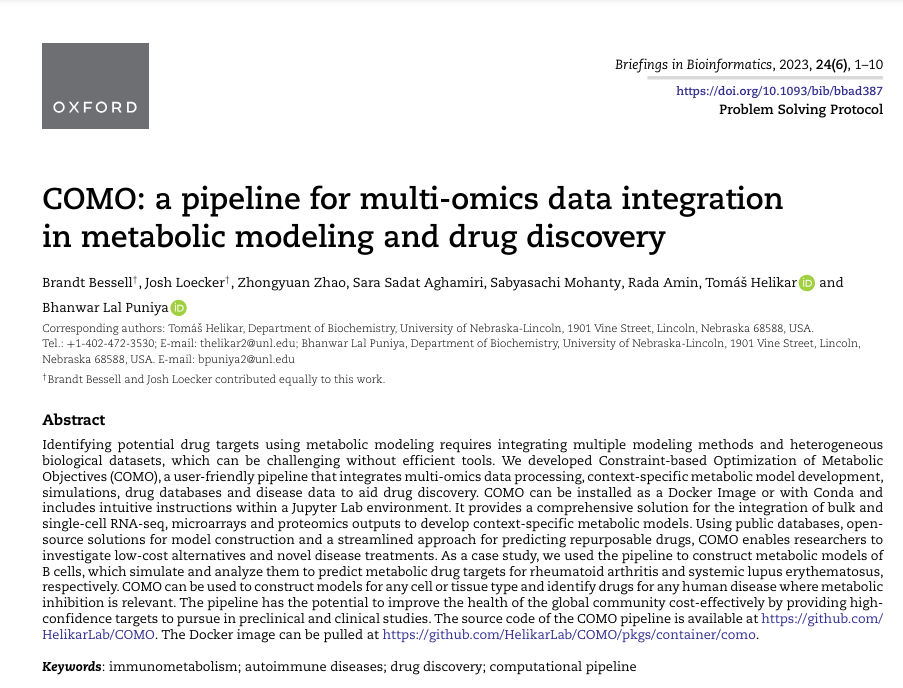
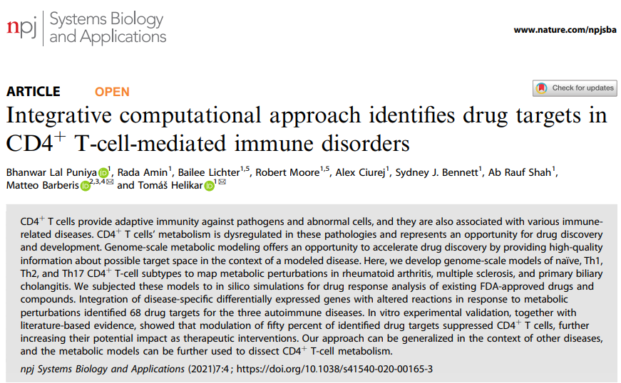

Publications
- Musilova, J, Vafek Z, Puniya BL , Zimmer R, Helikar T, Sedlar K Augusta: From RNA-Seq to Gene Regulatory Networks and Boolean Models, Computational and Structural Biotechnology Journal, 23 (2024): 783-790.
Link
- Niarakis, Anna, et al. "Drug-target identification in COVID-19 disease mechanisms using computational systems biology approaches." Frontiers in Immunology 14 (2024): 1282859.
DOI: Link
- Bessell B, Loecker J, Zhao Z, Aghamiri SS, Mohanty S, Amin R, Helikar T, Puniya BL*. COMO: A Pipeline for Multi-Omics Data Integration in Metabolic Modeling and Drug Discovery, Briefings in Bioinformatics 24.6 (2023): bbad387.
DOI: Link

- Puniya BL, Amin R, Lichter B, Moore R, Ciurej A, Bennett SJ, Shah AR,Barberis M, Helikar T, Puniya BL*. Integrative computational approach identifies drug targets in CD4+ T-cell-mediated immune disorders, Npj Systems Biology and Applications 7.4 (2021).
DOI: Link
